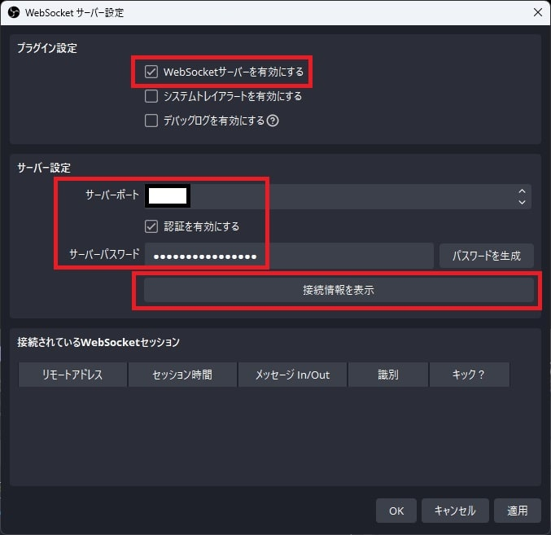
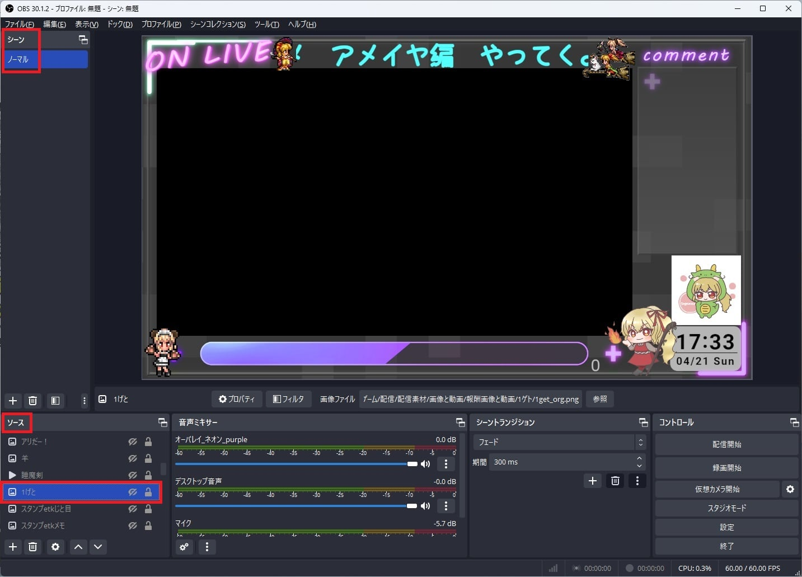

Node.js × OBS
はじめに
OBS × Node.js
obs-websocket-js というライブラリを使うと Node.js から OBS の操作ができるようになります。
使用できる関数はこちら。
今回はチャンネルポイントの「1ゲト」を例にして説明してみます。
WebSocketの設定
まず、 Node.js から OBS に接続できるようにするため、 OBS 側で WebSocket の設定を行います。
OBSを起動してツール→ WebSocket サーバー設定。

下図赤枠部分を設定。

サーバーIP、サーバーポート、サーバーパスワードを控える。

この設定ができれば、 以下のコードで OBS に接続できるようになります。
obs_control.jsconst {default: OBSWebSocket} = require('obs-websocket-js');
// インスタンス初期化
const obs = new OBSWebSocket();
// OBSに接続
obs.connect(
[obs_url],
[obs_password]
).catch((err) => {
console.log(err)
})
- obs_url：WebSocket 接続情報のサーバIP:サーバーポート
- obs_password：サーバーパスワード

OBS の操作
上記で WebSocket の設定ができれば、後は対応する関数を呼び出すことで OBS を操作することができます。
どんな関数があるかは Requests Table of Contents を参照してください。
今回は使用している関数は以下の通りです。
- DuplicateSceneItem：対象のソースをコピーする関数
- SetSceneItemEnabled：ソースの表示／非表示を切り替える関数
- GetSceneItemId：対象ソースのID（OBS内部で管理されているID）を取得する関数
- GetSceneItemTransform：対象のソースの座標や角度などの情報を取得する関数
- SetSceneItemTransform：対象ソースの座標や角度などを変更する関数
- RemoveSceneItem：対象ソースを削除する関数
ソース名（1げと）を元に対象ソースのコピーを生成→コピーしたアイテムを表示に切り替え→左方向に移動→コピーを削除
という流れです。コピーを生成している理由は、元のソースを操作すると後で戻さないといけないのと、同タイミングで複数回ポイントを使用された場合でも対応できるようにするためです。
obs_control.jsconst {default: OBSWebSocket} = require('obs-websocket-js');
const {setTimeout} = require("timers/promises");
const sceneNameNormal = 'ノーマル'
// インスタンス初期化
const obs = new OBSWebSocket();
// OBSに接続
obs.connect(
[obs_url],
[obs_password]
).catch((err) => {
console.log(err)
})
async function moveObsItem(sourceName) {
// コピー元アイテムの情報を取得
let orgItem = await obs.call('GetSceneItemId', {
'sceneName': sceneNameNormal,
'sourceName': sourceName
});
Object.values(orgItem).forEach(async (orgItemId) => {
// コピー生成
let dupItem = await obs.call('DuplicateSceneItem', {
'sceneName': sceneNameNormal,
'sceneItemId': orgItemId
});
Object.values(dupItem).forEach(async (dupItemId) => {
// 生成したアイテムを表示
obs.call('SetSceneItemEnabled', {
'sceneName': sceneNameNormal,
'sceneItemId': dupItemId,
'sceneItemEnabled':true
});
// 生成したアイテムの情報取得
let sceneItem = await obs.call('GetSceneItemTransform', {
'sceneName': sceneNameNormal,
'sceneItemId': dupItemId,
});
// 関数呼び出し（左に移動させる）
await moveHorizontal(dupItemId, sceneItem)
// 生成したコピーを消す
obs.call('RemoveSceneItem', {
'sceneName': sceneNameNormal,
'sceneItemId': dupItemId,
});
});
});
}
// 左に移動させる関数
async function moveHorizontal(sceneItemId, sceneItem) {
let posX = sceneItem.sceneItemTransform.positionX
// 生成したアイテムを移動
for (let i = 1; i <= 150; i++) {
obs.call('SetSceneItemTransform', {
'sceneName': sceneNameNormal,
'sceneItemId': sceneItemId,
'sceneItemTransform': {
'positionX': (posX + i * 5 * -1)
}
});
await setTimeout(10) // 0.1秒待つ
}
}
その他の実装
参考サイト